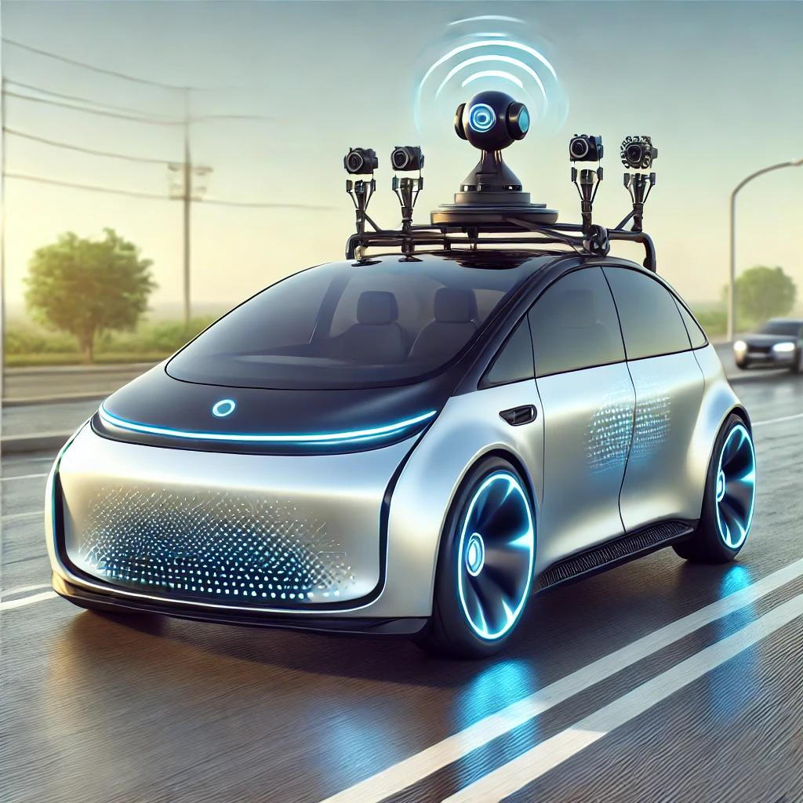
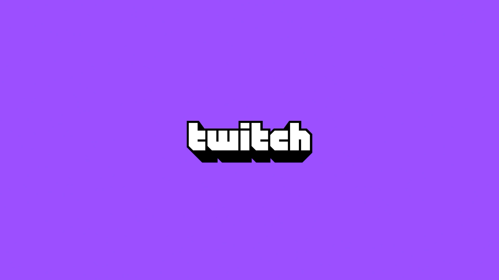

Projeler
"İşte yazılım geliştirme, problem çözme ve yenilikçilik becerilerimi sergilediğim bazı projelerim. Her proje, teknolojiye olan tutkum ve daha iyi bir geliştirici olma yolculuğumu yansıtıyor."

"Bu proje, otonom sürüş ve ileri seviye otomotiv tasarımı konusunda yenilikçi bir çalışmayı temsil etmektedir."

"Bu proje, popüler bir canlı yayın platformu olan Twitch'in temel özelliklerini yeniden oluşturmaktadır."